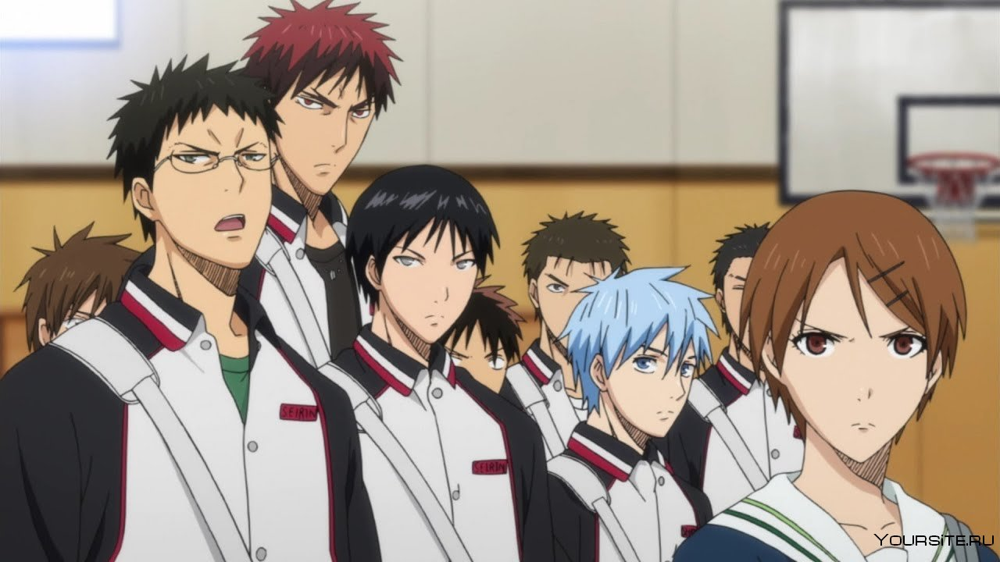
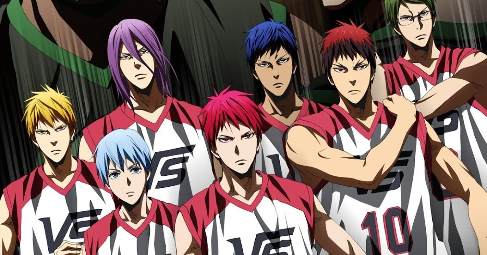

Баскетбол Куроко (яп. 黒子のバスケ, Kuroko no Basuke, англ. The Basketball Which
Kuroko Plays, букв. Баскетбол, в который играет Куроко) — японская манга о
баскетболе, автором которой является Тадатоси Фудзимаки (藤巻 忠俊, Fujimaki Tadatoshi).
История посвящена истории баскетбольной команды Старшей Школы Сейрин, которая пытается
стать победителем баскетбольного турнира среди старших школ.
Манга начала выходить в декабре 2008 года, и выпускалась в еженедельном журнале «Shōnen Jump»,
позже по ней был снят аниме-сериал, первый сезон которого стартовал в эфире в апреле 2012 года.
Релиз второго пришёлся на октябрь 2013 года. Выпуск третьего сезона начался в январе 2015. Показ
заключительной серии пришелся на 30 июня 2015 года.
В 2017 году в качестве продолжения вышел полнометражный фильм «Баскетбол Куроко. Последняя игра».
Сюжет
Баскетбольная команда Средней Школы Тейко завоевала признание благодаря победе в многочисленных
соревнованиях. Основной состав команды стал известен как «Поколение Чудес». После окончания средней
школы эти пять игроков разошлись по разным школам, выбрав те, где наиболее сильные баскетбольные
команды. Лишь немногие знали, что помимо этих пяти, был ещё один, «Призрачный шестой игрок». Этот
загадочный юноша поступил в Старшую Школу Сейрин, с никому не известной, но многообещающей командой.
Теперь Тецуя Куроко, тот самый «шестой игрок» Поколения Чудес, и Тайга Кагами, талантливый новичок,
большую часть жизни проведший в США, твёрдо намерены вывести свою команду к вершине японского чемпионата,
и для этого, помимо всего прочего, им нужно победить бывших товарищей Куроко по команде Тейко.
Персонажи
Персонажами «Баскетбола Куроко» являются немало разных личностей — игроки, менеджеры, тренеры и судьи.
Большинство героев аниме — юноши, ученики японских школ, которые играют за свои школьные команды Старших Школ.
Медиа
Манга
Основная статья: Манга
Манга начала выходить в декабре 2008 года в еженедельном журнале Shonen Jump. Автором является
Тадатоси Фудзимаки. Все изданные 275 глав собраны в 30 томов (танкобонов), первый из которых
был опубликован 3 апреля 2009 года. Серия закончилась 1 сентября 2014 года.
Премьера аниме-сериала, снятого по манге, состоялась 7 апреля 2012 года. Первый сезон
состоял из 25 серий и закончился 22 сентября 2012 года. 2 сезон длился с 5 октября 2013
года по 29 марта 2014 года, и также состоял из 25 серий. Третий сезон стартовал 10 января
2015 года. Помимо основных серий было выпущен ряд дополнительных, бонусных эпизодов.
Эпизоды аниме были также выпущены на DVD в формате Blu-ray.